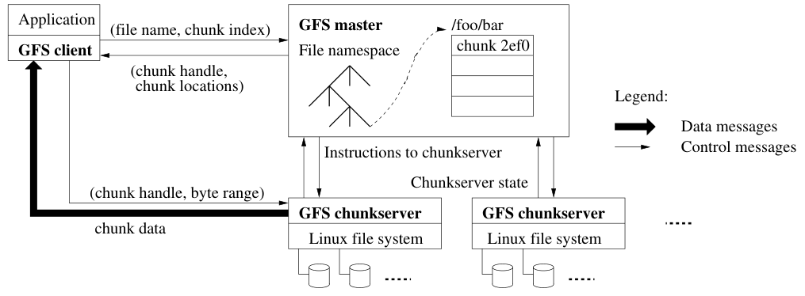
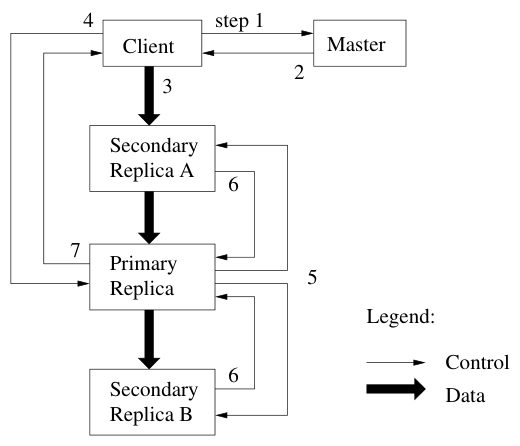
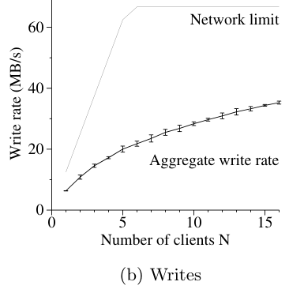
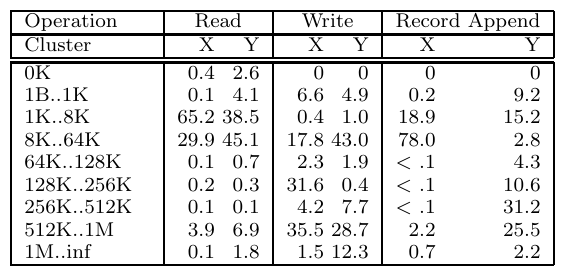
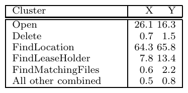

The Google File System
This page was written by an AI model to give a high-level overview of the paper. Please check the paper for detail.
Google needed a file system for its internal data processing pipelines: machines numbering in the hundreds to thousands, files of many gigabytes holding billions of web-scale objects, and a workload dominated by large streaming reads, small random reads, and large sequential appends from many producers writing into the same file concurrently (producer-consumer queues, many-way merges). High sustained bandwidth mattered far more than low latency on any single operation.
Traditional distributed file systems were not built for this. They generally assumed component failure was the exception, that files were modified by in-place random writes, and that POSIX compatibility and client-side data caching were worth their complexity. Google's environment inverted every one of these assumptions: with hundreds or thousands of inexpensive commodity machines, disk, memory, networking, and power failures happen routinely rather than rarely; almost all mutation is appending rather than overwriting; and caching file contents on the client buys little because applications stream through data sets far larger than any cache, or seek randomly within them.
GFS's answer is a system built around one master per cluster, which holds all file system metadata in memory, and many chunkservers, which hold the actual data. Files are split into large, fixed-size 64 MB chunks, each replicated on multiple chunkservers (three, by default) spread across machine racks. Clients contact the master only for metadata, the chunk handle and chunkserver locations for a given file and offset, and then read or write data directly against chunkservers, so the master is never on the data path and cannot become a throughput bottleneck. Within a chunk, the master grants one replica a time-limited lease making it the primary, and that primary alone assigns the serial order for mutations to the chunk, so there is no need for a general-purpose distributed locking protocol. On top of this, GFS deliberately relaxes the consistency model (distinguishing defined, consistent, and inconsistent file regions) and adds an atomic record append operation, so many clients on different machines can append to a shared file concurrently with no external synchronization.
Concretely: the master keeps the namespace, the file-to-chunk mapping, and chunk locations in memory, persisting only the namespace and mapping through a replicated operation log with periodic checkpoints; chunk locations themselves are never stored persistently and are instead rebuilt by polling chunkservers at startup and via regular heartbeats. A write pushes data to all replicas in a pipelined chain decoupled from the control path, then asks the primary to serialize and apply the mutation and forward it to secondaries. Record append works the same way except the primary, not the client, picks the offset, guaranteeing the data lands at least once as one contiguous unit. Snapshots use copy-on-write at the chunk level, and deleted files are reclaimed lazily through background garbage collection rather than immediately. Every chunkserver independently checksums 64 KB blocks of its own data to catch disk and IDE-level corruption, and shadow masters provide read-only access if the primary master is unavailable.
On a small 16-chunkserver, 16-client test cluster, aggregate read throughput reached 94 MB/s with 16 concurrent clients (about 75% of the 125 MB/s network limit), aggregate write throughput reached 35 MB/s (about half of a 67 MB/s limit), and record-append throughput held at 4.8 to 6.0 MB/s essentially independent of client count, since it is bound by the bandwidth of the chunkservers holding the file's last chunk rather than by the number of clients. In production, two real clusters with hundreds of chunkservers each and tens to hundreds of terabytes of data sustained read rates of 380 to 580 MB/s while the master handled only 200 to 500 operations per second, and after losing a chunkserver holding about 15,000 chunks (600 GB), the cluster fully restored replication in 23.2 minutes.

Key takeaways
- One master per cluster holds all metadata in memory; clients talk to the master only for metadata and go directly to chunkservers for data, so the master stays off the data path.
- Files are split into large 64 MB chunks, replicated three times by default and spread across racks, which cuts master interactions, shrinks metadata, and tolerates rack-level failures.
- Per-chunk leases delegate mutation ordering to a primary replica, avoiding master involvement, and a general locking service, on every write.
- A relaxed consistency model (defined, consistent but undefined, inconsistent regions) plus atomic record append let many clients append to a shared file concurrently without external coordination.
- Failure is treated as routine: fast stateless-feeling restarts, three-way replication, per-block checksums, and shadow masters for read availability during master outages.
From workload assumptions to a working cluster file system
The design assumptions, the single-master architecture, chunk sizing, the consistency model, the write and append paths, snapshots, and how the master keeps chunks replicated and healthy.
1 · The workload assumptions that drove the design
The paper's Section 2.1 lists the observations that shaped every later decision:
- The system is built from many inexpensive components that fail routinely; failure detection, tolerance, and automatic recovery must be built in, not bolted on.
- The system stores a modest number of large files, a few million files, typically 100 MB or larger, with multi-GB files common; small files must work but need not be optimized.
- Reads are either large streaming reads (hundreds of KB to 1 MB or more per operation, often sequential) or small random reads of a few KB.
- Writes are mostly large, sequential appends; files are rarely modified once written, and small random writes are supported but not optimized.
- Many clients concurrently append to the same file (producer-consumer queues, many-way merges) and need atomicity with minimal synchronization.
- High sustained bandwidth matters more than low latency for an individual operation.
2 · Architecture: one master, many chunkservers, direct data path
A GFS cluster has a single master, many chunkservers, and is accessed by many clients, typically all running as user-level processes on commodity Linux machines. Files are divided into fixed-size chunks, each identified by a globally unique 64-bit chunk handle assigned at creation and replicated, by default, on three chunkservers. The master holds all metadata: the namespace, access control information, the file-to-chunk mapping, and current chunk locations, and it also drives cluster-wide activities such as lease management, garbage collection, and chunk migration.
For a simple read, the client first turns the (file name, byte offset) pair into a (file name, chunk index) using the fixed chunk size, sends that to the master, and gets back the chunk handle and replica locations, which it caches. It then contacts the closest replica directly with the chunk handle and byte range; no further master interaction is needed for subsequent reads of the same chunk until the cached entry expires or the file is reopened. The master often piggybacks locations for the chunks immediately following those requested, cutting future client-master round trips at essentially no extra cost.
3 · Chunk size: why 64 MB
Each chunk replica is stored as an ordinary Linux file on a chunkserver and extended lazily, so a large chunk size does not waste space through internal fragmentation. A 64 MB chunk gives three advantages: it reduces how often a client must contact the master, since reads and writes on the same chunk need only one initial location lookup; it lets a client keep a persistent TCP connection to a chunkserver over many operations on the same chunk; and it keeps the master's metadata small enough to fit entirely in memory. The downside is that a file of only one or a few chunks can create a chunkserver hot spot if many clients access it at once; this surfaced in practice when an executable written to GFS as a single chunk was started on hundreds of machines simultaneously, overloading the few chunkservers holding it. The fix was operational: a higher replication factor for such files and staggered application start times, with client-to-client reads proposed as a longer-term solution.
4 · Metadata and the operation log
The master keeps three kinds of metadata entirely in memory: the file and chunk namespaces, the file-to-chunk mapping, and current chunk replica locations. Only the first two are made persistent, by logging every mutation to an operation log stored on the master's local disk and replicated to remote machines; a client operation is not acknowledged until the log record is flushed locally and remotely, with several records batched per flush to limit the throughput cost. Chunk locations are never stored persistently; instead the master rediscovers them by polling chunkservers at startup and on chunkserver join.
Because the metadata is so compact, the master keeps under 64 bytes of metadata per 64 MB chunk and typically under 64 bytes per file name (thanks to prefix compression), so memory on the master is not expected to limit cluster capacity in practice. To bound recovery time, the master periodically checkpoints its state in a compact, memory-mappable B-tree-like format and builds the new checkpoint in a separate thread so incoming mutations are not delayed; recovery then only needs to load the latest checkpoint and replay the log records written after it.
5 · The consistency model
GFS defines a file region's state after a mutation along two axes: whether it is consistent (all clients see the same data regardless of which replica they read) and whether it is defined (consistent, and clients see exactly what the mutation wrote). A successful mutation with no concurrent interference leaves the region defined. Concurrent successful mutations leave it consistent but undefined, typically a mingling of fragments from multiple writers. A failed mutation leaves it inconsistent.
| Write | Record append | |
|---|---|---|
| Serial success | defined | defined, interspersed with inconsistent |
| Concurrent success | consistent but undefined | consistent but undefined |
| Failure | inconsistent | inconsistent |
GFS guarantees defined, consistent regions after a sequence of successful mutations by applying mutations to a chunk in the same order on every replica and by using chunk version numbers to retire stale replicas that missed mutations while their chunkserver was down.
6 · Leases, mutation order, and the write path

A chunk lease, granted by the master to one replica (the primary), fixes the serial order of mutations to that chunk; all replicas apply mutations in the order the primary assigns. Leases start with a 60-second timeout but the primary can request extensions indefinitely, piggybacked on regular heartbeat messages, as long as mutations keep arriving, which keeps management overhead at the master low.
- The client asks the master for the chunk's current lease holder and the locations of the other replicas; if no lease exists, the master grants one.
- The master replies with the primary's identity and the secondary locations, which the client caches.
- The client pushes the data itself to all replicas, in any order, decoupled entirely from control flow; each chunkserver buffers it in an internal LRU cache until it is used.
- Once all replicas acknowledge the data, the client sends a write request to the primary, which assigns consecutive serial numbers to all mutations it receives (possibly from several clients) and applies them to its own state in that order.
- The primary forwards the write request to all secondaries, which apply mutations in the same serial order.
- The secondaries acknowledge completion to the primary.
- The primary replies to the client, reporting any errors; a failure at any replica leaves that attempt's region inconsistent and the client retries.
Data is pushed along a chain of chunkservers, not a star or tree, so that each machine's full outbound bandwidth goes toward moving the data forward; each hop forwards to the network-closest chunkserver that has not yet received the data, and transfer is pipelined over TCP so forwarding starts as soon as the first bytes arrive. Without congestion, the ideal time to push B bytes to R replicas is B/T + RL, where T is per-link throughput and L is machine-to-machine latency; on the paper's 100 Mbps links with sub-millisecond latency, this puts 1 MB at about 80 ms.
7 · Atomic record append
Record append lets a client specify only the data; GFS appends it at least once, atomically, at an offset of its own choosing, and returns that offset, avoiding the race conditions of concurrent O_APPEND writes. It follows the same control flow as a regular write, with one addition: the primary checks whether appending the record would push the chunk past the 64 MB maximum, and if so pads the chunk to full size, tells secondaries to do the same, and tells the client to retry on the next chunk (record append is capped at one quarter of the chunk size to bound worst-case fragmentation). Otherwise the primary appends the data, instructs secondaries to write it at that exact offset, and returns success. A failed append at any replica can leave replicas bytewise different and can leave duplicate or partial records behind; GFS only guarantees that, on success, the data was written as one atomic unit at the same offset on every replica, and that replica is then at least that long, so later appends always land at a higher offset or a different chunk.
8 · Snapshot via copy-on-write
Snapshot copies a file or directory tree almost instantaneously using the same copy-on-write technique as AFS. On a snapshot request, the master first revokes outstanding leases on the affected chunks, forcing any subsequent write to go through the master; it then logs the operation and duplicates the metadata for the source files, with the new snapshot files initially pointing at the same chunks as the originals. The first time a client wants to write to a chunk after a snapshot, the master notices the chunk's reference count exceeds one, defers its reply, and has each chunkserver holding a replica create a new chunk by copying locally (disks were about three times faster than the 100 Mbps links, so local copy avoids network cost); only then does it grant a lease on the new chunk and let the write proceed normally.
9 · Keeping chunks replicated and balanced
Multiple master operations can run concurrently thanks to read-write locks over regions of the namespace (represented as a path-to-metadata lookup table, not a per-directory listing), acquired in a fixed order to avoid deadlock; a snapshot of /home/user and a file creation under /home/user are serialized because both need a lock on that path, while unrelated creations in the same directory can proceed concurrently.
- Placement. New replicas go on chunkservers with below-average disk utilization, limit recent creations per chunkserver (a signal of imminent heavy write traffic), and spread across racks for fault isolation and read bandwidth.
- Re-replication. Triggered whenever a chunk's replica count falls below its goal (chunkserver loss, disk error, corrupted replica, or a raised replication goal); priority favors chunks furthest from their goal, chunks belonging to live rather than deleted files, and chunks currently blocking an application.
- Rebalancing. The master periodically re-examines the whole distribution, gradually filling new chunkservers rather than flooding them, and removing replicas preferentially from chunkservers with below-average free space.
- Garbage collection. A deleted file is just renamed to a hidden, timestamped name; a regular namespace scan erases it (and its chunk references) only after it has existed hidden for three days by default, and orphaned chunks are identified during heartbeat exchanges and deleted from chunkservers on the master's instruction.
- Stale replica detection. The master bumps a chunk's version number whenever it grants a new lease and records it on all up-to-date replicas before any client can write; a chunkserver that was down during that update reports a lower version number on restart and is treated as stale, excluded from reads and writes, and eventually garbage collected.
10 · Fault tolerance and data integrity
Both the master and chunkservers are designed to restart and serve requests again within seconds regardless of how they stopped, including a plain kill; clients and servers simply time out, reconnect, and retry. Chunks are replicated (three-way by default, user-adjustable per namespace region) across racks for availability under both machine and rack-level failures. The master's own state is kept small and is itself replicated: its operation log and checkpoints are written to multiple machines, a mutation is only considered committed once flushed locally and on all replicas, and shadow masters apply the same log stream to serve read-only requests (with file content never stale, since it comes from chunkservers, but directory and metadata reads potentially lagging by fractions of a second) when the primary master is down. Each chunkserver independently checksums its data in 64 KB blocks, verifying blocks before returning any read so corruption is never propagated between machines; a mismatch triggers an error to the requester, a re-clone from a valid replica, and deletion of the bad one, and idle-time scans catch corruption in chunks that are rarely read.
How these mechanisms perform, in micro-benchmarks and on real clusters, is covered in the Evaluation tab.
Evaluation
What the paper measures on a small test cluster, on two production clusters, and in a workload breakdown from two further clusters.
The paper combines controlled micro-benchmarks on a small dedicated test cluster with statistics drawn from clusters already running inside Google. Section 6.1's micro-benchmarks use a 16-chunkserver, 16-client cluster built for ease of testing (production clusters typically have hundreds of each). Section 6.2 reports on two in-use clusters, A (research and development) and B (production data processing). Section 6.3 reports a size and request-type breakdown from two further, comparable clusters, X (research and development) and Y (production).
| What | Value in the paper |
|---|---|
| Test cluster hardware | 1 master, 2 master replicas, 16 chunkservers, 16 clients; dual 1.4 GHz PIII, 2 GB RAM, two 80 GB 5400 rpm disks, 100 Mbps full-duplex to an HP 2524 switch, two switches linked at 1 Gbps |
| Micro-benchmark workloads | Reads: N clients each read 256 random 4 MB regions (1 GB/client) from a 320 GB file set. Writes: N clients each write 1 GB to a new file in 1 MB writes. Appends: N clients append concurrently to one shared file |
| Real clusters | A: 342 chunkservers, 72 TB available, 55 TB used. B: 227 chunkservers, 180 TB available, 155 TB used |
| Baselines | Theoretical network throughput limit given the topology (125 MB/s aggregate read limit from the 1 Gbps inter-switch link, or 12.5 MB/s per client; 67 MB/s aggregate write limit from tripling every byte across 3 of 16 chunkservers) |
| Metrics | Aggregate throughput vs. client count N; cluster storage, metadata size, and read/write/master-op rates over time; chunk re-replication recovery time; operation and byte-size distributions; master request-type breakdown |
Aggregate throughput climbs toward the network limit, but writes and appends lag reads

What it shows. Figure 3 plots aggregate throughput against the number of clients N for reads (a), writes (b), and record appends (c), each with the theoretical network limit as an upper curve. Reads: a single client gets 10 MB/s (80% of its 12.5 MB/s per-client limit); 16 clients reach 94 MB/s aggregate (75% of the 125 MB/s limit, 6 MB/s per client), efficiency dropping slightly because more readers increases the odds that two land on the same chunkserver. Writes: a single client gets 6.3 MB/s (about half the limit, blamed on the network stack interacting poorly with pipelined replication); 16 clients reach 35 MB/s aggregate (2.2 MB/s per client, about half the 67 MB/s limit). Record appends: throughput starts at 6.0 MB/s for one client and drops to 4.8 MB/s for 16, since it is capped by the network bandwidth of whichever chunkservers hold the file's last chunk, not by client count.
What to take from it. Reads scale efficiently because any of three replicas can serve them and clients spread across chunkservers; writes and appends are costlier because every byte must reach three replicas and, for appends, many clients contend for the same last chunk. The paper argues this single-client write latency penalty does not hurt aggregate throughput much in practice, since real workloads run many files and many clients concurrently rather than one file at a time.
Production clusters run at hundreds-of-chunkserver scale with low master overhead and fast recovery
What it shows. Clusters A and B (342 and 227 chunkservers) store 55 TB and 155 TB of used disk space respectively, meaning 18 TB and 52 TB of actual file data once threefold replication is accounted for, while keeping only 48 MB and 60 MB of metadata at the master (about 100 bytes per file on average) and 13 GB and 21 GB of per-block checksums at the chunkservers. Sustained read rates over the preceding week were 580 MB/s (A, against a 750 MB/s network capacity) and 380 MB/s (B, against 1300 MB/s capacity), while master operations ran at 200 to 500 per second, well within what the master can handle. After deliberately killing one chunkserver in cluster B holding about 15,000 chunks (600 GB), the cluster restored full replication for all of them in 23.2 minutes at an effective 440 MB/s (limited to 91 concurrent clones at 6.25 MB/s each); killing two chunkservers at once (about 16,000 chunks and 660 GB each), leaving 266 chunks with only one replica, restored those 266 to at least two replicas within 2 minutes.
What to take from it. The architecture's core bet, keeping all metadata in memory on one master while data flows directly between chunkservers and clients, holds up at hundreds of machines and hundreds of terabytes: the master is never close to saturated, and re-replication after a failure completes in minutes rather than hours, restoring fault tolerance quickly after a real machine loss.
Chunkserver operations are bimodal: many small reads, many large writes and appends

What it shows. Table 4 breaks down the percentage of operations by size for clusters X and Y. Reads are bimodal: most operations in X fall in the 1 KB to 8 KB range (65.2%) from seek-intensive lookups within huge files, while Y skews more toward 8 KB to 64 KB (45.1%) and shows a notable share of zero-length reads (2.6%), attributed to consumers in producer-consumer queues occasionally outpacing producers. Writes are also bimodal, with large writes over 256 KB (Y: 28.7% in the 512 KB to 1 MB band alone) reflecting heavily buffered writers, and smaller writes under 64 KB from writers that checkpoint or synchronize more often. Record appends in cluster X are dominated by the 8 KB to 64 KB band (78.0%), while Y's production systems, more aggressively tuned for GFS, show a much higher share of large appends.
What to take from it. The operation-size mix matches the paper's design bet: most read and write traffic is large and sequential or append-shaped, which is exactly what 64 MB chunks, pipelined writes, and record append are optimized for, while the smaller-operation tail (random reads, small writes) is supported but not the system's main target.
Large operations dominate bytes transferred, and appends vastly outnumber true overwrites

What it shows. Table 5 shows that for every operation type, operations over 256 KB account for the bulk of bytes moved: reads over 512 KB carry 65.9% (X) and 55.1%+30.1% (Y, the 512 KB to 1 MB and 1 MB+ bands) of read bytes despite being a small fraction of operation counts; writes over 256 KB and appends over 128 KB show similarly skewed shares. The paper separately reports that record append dominates data mutation: writes-to-appends ratios are 108:1 by bytes and 8:1 by operation count in cluster X, versus 3.7:1 and 2.5:1 in cluster Y, and genuine in-place overwriting of already-written data accounts for under 0.0001% of mutated bytes in X and about 0.05% in Y, most of which traces back to client retries after errors or timeouts rather than deliberate overwrites.
What to take from it. Even though small operations are common by count, the system's bandwidth is spent on large transfers, validating the chunk-size and pipelining choices, and the near-total dominance of appending over overwriting confirms the paper's core workload assumption that files are written once and read, rather than modified in place.
Master traffic is dominated by chunk-location and lease lookups, not file data
What it shows. Table 6 breaks master requests down by type for clusters X and Y: FindLocation (location lookups for reads) is the largest category at 64.3% (X) and 65.8% (Y), followed by Open at 26.1%/16.3% and FindLeaseHolder (lease lookups for mutations, the first step of the write control flow) at 7.8%/13.4%; Delete and the pattern-matching FindMatchingFiles together make up only a few percent, with Y showing more of both because its production jobs regenerate data sets and inspect namespace state programmatically. The paper notes that an earlier master version was occasionally bottlenecked by linear directory scans, fixed by moving to binary search over the namespace, after which the master comfortably handles the measured 200 to 500 operations per second with headroom for many thousands per second if needed.
What to take from it. Every one of these request types is a metadata lookup of the kind step 1 of the write path in Figure 2 depicts, confirming that the master's job really is confined to locating and ordering, never moving, data, which is what keeps it off the data path and able to scale to hundreds of concurrent clients.
FAQ
Q·What exactly makes GFS different from an ordinary network file system?▾
It is not POSIX-compliant and does not try to be. Applications link GFS's own client library rather than going through the kernel's vnode layer, files are split into large 64 MB chunks replicated across machines, and the system is co-designed with its applications: it adds operations like atomic record append and relaxes consistency guarantees in ways a general-purpose file system could not.
Q·Why doesn't the single master become a bottleneck or a single point of failure?▾
It is kept off the data path: clients fetch metadata (chunk locations, lease holders) from the master once per chunk and cache it, then read and write chunkservers directly, so bulk data never flows through the master. For failure, its state (namespace and file-to-chunk mapping) is kept small enough to live in memory and is replicated to multiple machines via a logged, checkpointed operation log, so a new master can start from that log within seconds, and shadow masters serve read-only metadata requests in the meantime.
Q·What does a 64 MB chunk actually buy, beyond being a big number?▾
Three things: fewer client-master round trips (one lookup covers many operations on the same chunk), the ability to hold a persistent TCP connection to a chunkserver across many operations, and metadata small enough (under 64 bytes per chunk) to fit entirely in the master's memory. Its downside is that a small, popular file concentrated on few chunks can overload the chunkservers holding it, which the paper hit in practice with a widely launched single-chunk executable.
Q·What is atomic record append, and why not just let clients pick the write offset themselves?▾
With record append, the client supplies only the data; GFS chooses the offset and guarantees the bytes land at least once as one contiguous unit, even with many clients appending to the same file at once. Letting clients pick offsets (an ordinary write at the end of file) is not safe under concurrency, since two clients could both believe they are writing at the same "end of file" position and clobber each other; record append avoids that without a distributed lock manager.
Q·What is the difference between a "consistent" region and a "defined" region?▾
Consistent means every client sees the same bytes no matter which replica serves the read. Defined is stronger: the region is consistent and also reflects exactly what one mutation wrote, with no interference from a concurrent mutation. A region can be consistent but undefined, a mix of fragments from multiple successful concurrent writers, which is still safe to read but not predictable in content.
Q·How do applications cope with a file system that admits "undefined" regions?▾
By structuring their I/O around the guarantees GFS does make: appending rather than overwriting (so new data never corrupts old), checkpointing how much has been reliably written (so readers only trust data up to the last checkpoint), and writing self-identifying, checksummed records so a reader can detect and discard padding, partial fragments, or duplicates left behind by retried appends.
Q·How are mutations ordered consistently across three replicas without a consensus protocol?▾
The master grants one replica of a chunk a time-limited lease, making it the primary. The primary assigns a serial number to every mutation it receives and applies them to itself in that order, then forwards the same order to the secondaries. Ordering is enforced by having a single designated orderer per chunk rather than by voting among replicas.
Q·What happens if a client, the primary, or a secondary fails mid-write?▾
If the primary itself fails before assigning a serial number, the mutation never happened and nothing is forwarded. If it succeeds at the primary and only some secondaries, the client sees a reported failure, the affected region is left inconsistent, and GFS's client library retries the mutation (and eventually retries from the start of the write) rather than silently leaving partial state.
Q·Why is a deleted file not actually erased right away?▾
Deletion first just renames the file to a hidden, timestamped name, kept for three days by default, after which a regular background scan erases its metadata and orphaned chunks are reclaimed from chunkservers. This gives a built-in safety net against accidental deletion, batches the real reclamation work into the master's existing background scans, and sidesteps the hard problem of reliably deleting replicas in the face of routine machine and message failures.
Q·How does GFS detect that a disk silently corrupted data?▾
Each chunkserver keeps a 32-bit checksum for every 64 KB block of every chunk it stores, independent of any other replica, and verifies the relevant checksums before returning data from a read. A mismatch triggers an error to the requester, a report to the master, re-cloning of the chunk from a good replica, and deletion of the corrupted one; idle-time background scans catch corruption in chunks that are rarely read and would otherwise go unnoticed.
Q·Does GFS use RAID-style erasure coding instead of plain replication?▾
No, the paper describes three-way replication as the redundancy mechanism used at the time, chosen for simplicity over RAID-style parity or erasure codes (general knowledge), though it notes the authors were exploring cross-server redundancy schemes like parity or erasure coding for read-mostly storage as future work.
Q·Is GFS still in use today?▾
The paper itself only describes the 2003 system in production at Google at the time. Its design strongly influenced later systems built on similar principles, such as the open-source Hadoop Distributed File System, and Google is known to have moved on to successor internal systems (general knowledge, not stated in this paper).
Q·How does GFS's centralized master compare to fully distributed file systems like Frangipani or GPFS?▾
Systems like Frangipani, xFS, and GPFS remove any centralized metadata server and rely on distributed algorithms for consistency, trading simplicity for decentralization. GFS deliberately keeps a centralized master because it simplifies implementing sophisticated placement and replication policies (the master already has global knowledge) and compensates for the resulting single point of logic by keeping master state small, replicated, and quick to restore, plus shadow masters for read availability.